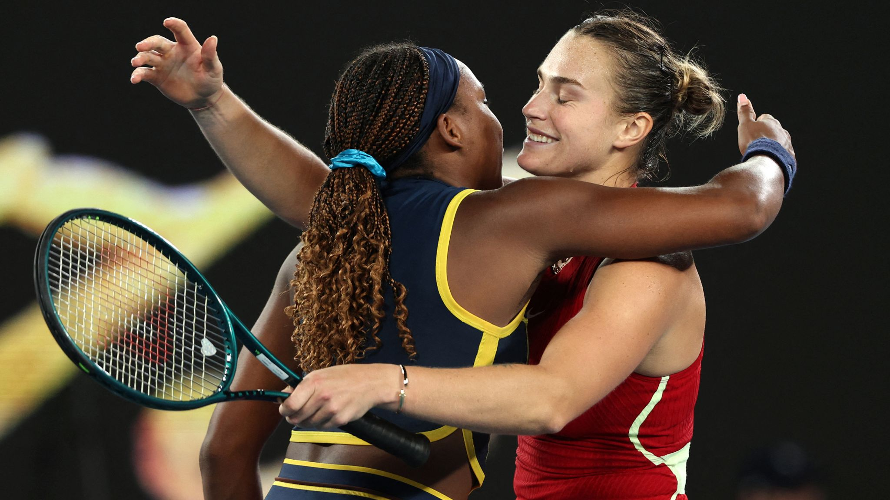
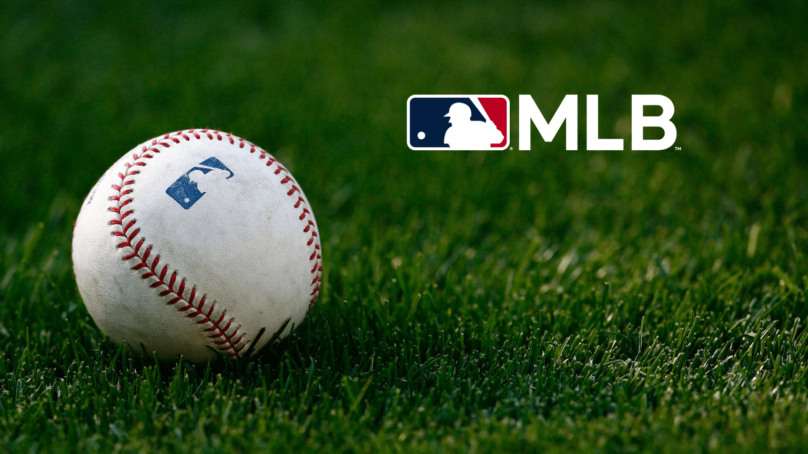

Deporte
Fútbol chileno: Ben Brereton aumentó su registro goleador jugando con La Roja en el duelo ante Cabo VerdeDeporte La Selección Chilena se impuso a Cabo Verde por la FIFA Series y Ben Brereton fue protagonista del encuentro, acrecentando su registro goleador jugando por La Roja. El delantero del Derby County, que fue titular y tuvo un buen cometido, abrió la cuenta para los nacionales en los 16 minutos, tras una gran habilitación de Rodrigo Echeverría. Ese tanto le permitió a Brereton llegar a 10 gritos sagrados con La Roja (6 de ellos en amistosos y 4 en duelos por los puntos) en 41 partidos. De esta manera, el ariete sigue aumentando su cuota goleadora defendiendo a Chile. |
Tenis internacional: Miami Open finaliza con Aryna Sabalenka como su ganadoraDeporte  Aryna Sabalenka, número 1 de la WTA, es la dueña del tenis femenino. Con un gran nivel desplegado, superó a Coco Gauff (4ª) por 6-2, 4-6 y 6-3 en la final del Miami Open para conquistar su decimoprimer WTA 1000 y adueñarse del Sunshine Double, tras el título que consiguió recientemente en Indian Wells. Esta es la primer final que pierde Gauff sobre canchas duras. La estadounidense había llegado a Florida con un categórico 9-0 en este rubro tras sus consagraciones en Linz (2019), Auckland (2023), Washington (2023), Cincinnati (2023), US Open (2023), Auckland (2024), Beijing (2024), WTA Finals (2024), Wuhan (2025). |
Juegos OlímpicosInternacional: MLBPA: huelga en 2027 podría afectar a los Juegos Olímpicos  Una huelga que provoque la cancelación de juegos durante la temporada 2027 de las Grandes Ligas podría alterar los planes para que los jugadores de MLB participen en los Juegos Olímpicos de Los Ángeles 2028. Los seguros y las condiciones laborales de los jugadores siguen siendo cuestiones que deben resolverse para que los jugadores de la MLB puedan participar en los Juegos Olímpicos. En el Clásico Mundial de Beisbol, los costos se dividen proporcionalmente entre los accionistas: la MLB y el sindicato tienen participaciones iguales, que son las mayores, y la WBSC, la Liga Japonesa de Beisbol Profesional y la Organización Coreana de Beisbol también poseen participaciones minoritarias. |